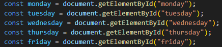
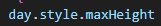
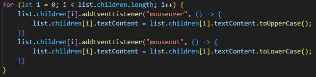
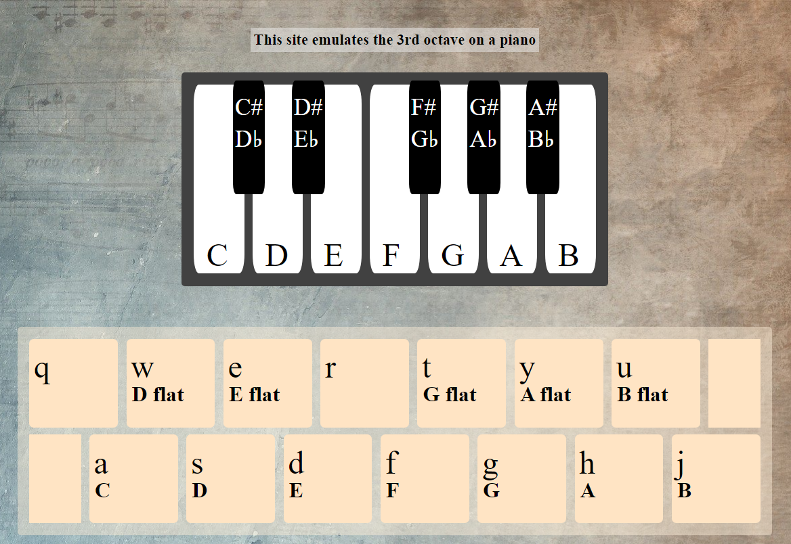
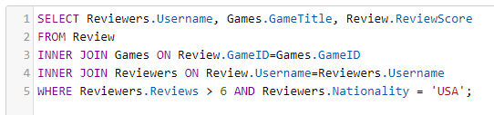

Week Four
JSDOM
We learned about JSDOM which is the connection
between html,CSS and javascript
Our lessons were as follows:
- Monday - JSDOM introductions
- Tuesday - SQL normalization and further JSDOM
- Primary Key - a unique identifier value for a record in a table
- Foreign Key - a value from another table used to link to and access this tables records, often another tables primary key
- Composite Key - a combination of multiple keys from seperate tables in a new bridging table to link the tables together
- One to One - a single record links to single record in another table (one person to one medical history)
- One to Many - a single record links to multiple records in another table (one author to many books)
- Many to Many - multiple records link to multiple records in another table (multiple customers buy multiple products)
- 1st normal form - a single cell holds one value (atomicity), there is a primary key, no duplicate rows or columns, each column has one value for each row in the table, each row must be unique
- 2nd normal form - 1st normal form must be met, all values that are dependant on the primary key stay in the main table, all values not dependant on the primary key are put in new tables where they are put in a way that they are all dependent on their tables primary key
- 3rd normal form - 2nd normal form must be met, has no transitive functional dependency(all values in each table must depend on only the primary key and no other values)
- Wednesday - Soundboard project
- Thursday - SQL Joins
- INNER JOIN - returns records that match
- LEFT JOIN - returns the entire left table and matched records from the right
- RIGHT JOIN - returns the entire right table and matched records from the left
- FULL OUTER JOIN - returns all records from both tables when their is a match in either table
- Friday -
We started learning JSDOM which is how we connect the HTML and CSS to our javascript, this is done by grabbing elements using a multitude of ways, such as: tag, id, class. You can grab an element using the syntax shown below
And you can access the CSS and HTML attributes of elements the same way you access regular objects, dot notation, which can be seen below
When you want to effectively store data without any redundant or inconsistent records you can break up your database into smaller, more managable databases, this process is called normalization and it helps by breaking down the tables until the values in each table are only dependant on that tables primary key and only that primary key
There are multiple keys involved in normalization
The types of links between tables can also be broken down into 3 types
As a general rule we want to avoid many to many relationships as it leads to redundant and inconsistent data, to break down many to many relationships we use normalisation which the first 3 steps of are:

For the rest of the day we worked on more JSDOM challenges that showed more functionality like creating and destroying elements as well as setting timers and new event listeners like mouseover and mouseout which trigger when the mouse enters or leaves an element
We also did some work on a mini project involving getting information from a key pressed
Click here to check it out! we were given a mini project where we can make a soundboard of our choosing or a drum kit that Leon has experience with so he would be able to provide more assistance, I decide that I wanted to make an octave from a piano which sounded great at the time, after 4 painful hours it was complete, the code is messy and very repetitive so if given time I will optimize and reduce the size of the code, you can check it out below
Click here to see the piano project Afterword - I spent the entirety of wednesday night optimizing it and am honestly impressed with myself,I have brought down the number of lines from 300+ to 87 and it is now split into functions so adding more keys wouldn't add any more lines of code, I would just need to add more values to a few arrays
On Thursday we learned about SQL Joins, a way to connect multiple tables together by joining the tables at a specific data point
The syntax for joining tables is shown below:
SELECT fieldsYouWantToDisplayFromBothTables
FROM 1stTable
JoinType JOIN 2ndTable ON 1stTableKey=2ndTableKey (the shared key from each table)
WHERE condition (this line is optional)
Below is an example of a double join
The Join types are as follows:

Another Way to look at joins is as sewing tables together where, in the tables, the shared key matches